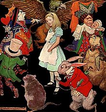

ALICE IN WONDERLAND
There was nothing so VERY remarkable in that; nor did Alice think it so VERY much out of the way to hear the Rabbit
say to itself, `Oh dear! Oh dear! I shall be late!' (when she thought it over afterwards, it occurred to her that she ought to
have wondered at this, but at the time it all seemed quite natural); but when the Rabbit actually TOOK A WATCH
OUT OF ITS WAISTCOAT- POCKET, and looked at it, and then hurried on, Alice started to her feet, for it flashed
across her mind that she had never before see a rabbit with either a waistcoat-pocket, or a watch to take out of it, and
burning with curiosity, she ran across the field after it, and fortunately was just in time to see it pop down a large
rabbit-hole under the hedge.
In another moment down went Alice after it.

The rabbit-hole went straight on like a tunnel for some way, and then dipped suddenly down.
And here Alice began to get rather sleepy, and went on taking to herself, in a dreamy sort of way. Suddenly
, thump! thump! down she came upon a heap of sticks and dry leaves, and the fall was over.
Alice was not a bit hurt, and she jumped up on to her feet in a moment: she looked up, but it was all dark overhead;
before her was another long passage, and the White Rabbit was still in sight, hurrying down it. There was not a moment
to be lost: away went Alice like the wind, and was just in time to hear it say, as it turned a corner, `Oh my ears and
whiskers, how late it's getting!'
Alice opened the door and found that it led into a small passage, not much larger than a rat-hole: she knelt down and
looked along the passage into the loveliest garden you ever saw. How she longed to get out of that dark hall, and wander
about among those beds of bright flowers and those cool fountains, but she could not even get her head though the doorway.
Soon her eye fell on a little glass box that was lying
under the table: she opened it, and found in it a very small cake, on which the words `EAT ME' were beautifully marked
in currants. `Well, I'll eat it,' said Alice.
She suddenly looked down at her hands, and was surprised to see that she had put on one of the Rabbit's little
white kid gloves while she was talking. `I must be growing small again',she thought.'She
got up and went to the table to measure herself by it, and found that, as nearly as she could guess, she was now about
two feet high, and was going on shrinking rapidly.
`That WAS a narrow escape!' said Alice, a good deal frightened at the sudden change, but very glad to find herself still
in existence; `and now for the garden!'
Alice met many other characters like the Mary Ann, March Hare, the Hatter, the mock turtle, the lobster Quadrille, the
lizard, the gryphon, King Herald, the Juryman in the king's Court, the Queen ofcourse and many others.
Lastly, she pictured to herself how this same little sister of hers would, in the after-time, be herself a grown woman; and
how she would keep, through all her riper years, the simple and loving heart of her childhood: and how she would gather
about her other little children, and make THEIR eyes bright and eager with many a strange tale, perhaps even with the
dream of Wonderland of long ago: and how she would feel with all their simple sorrows, and find a pleasure in all their
simple joys, remembering her own child-life, and the happy summer days.
THE END
BACK